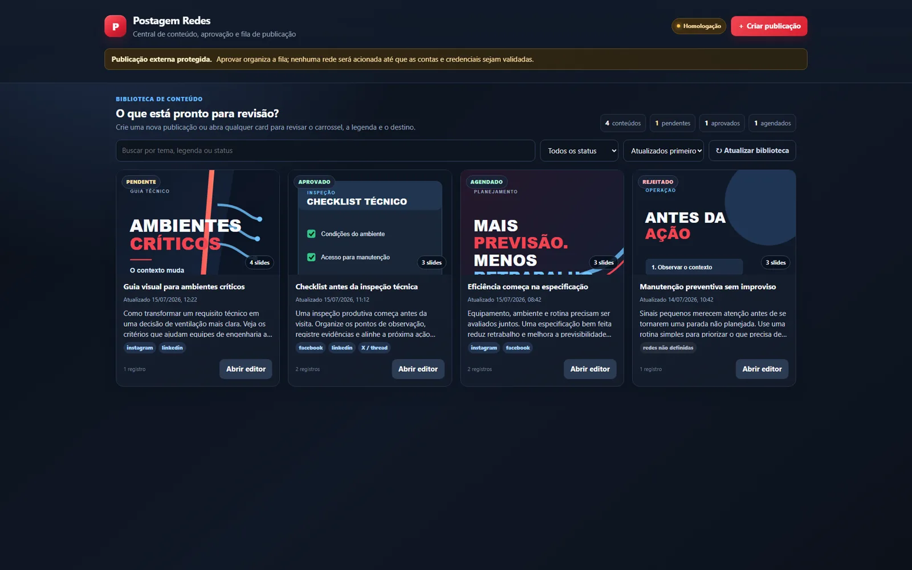
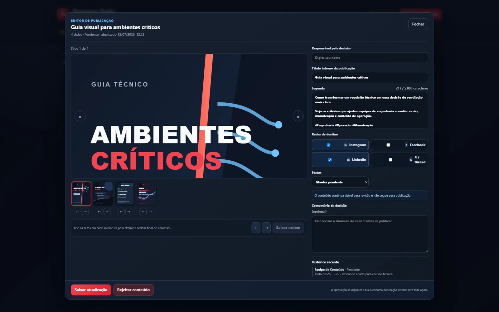
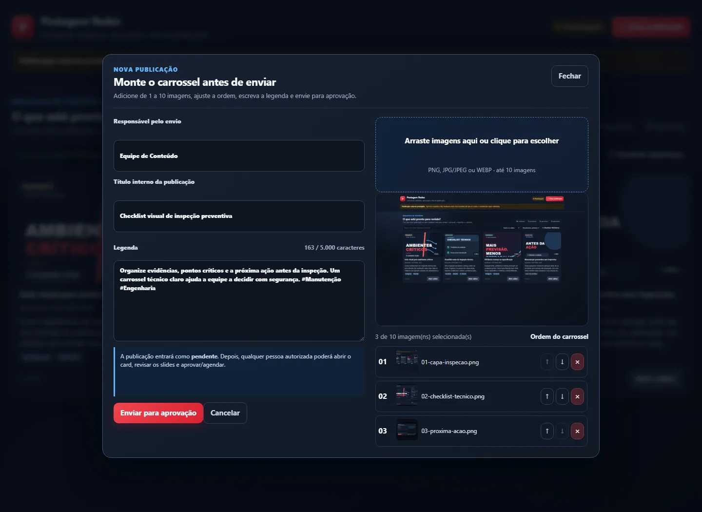
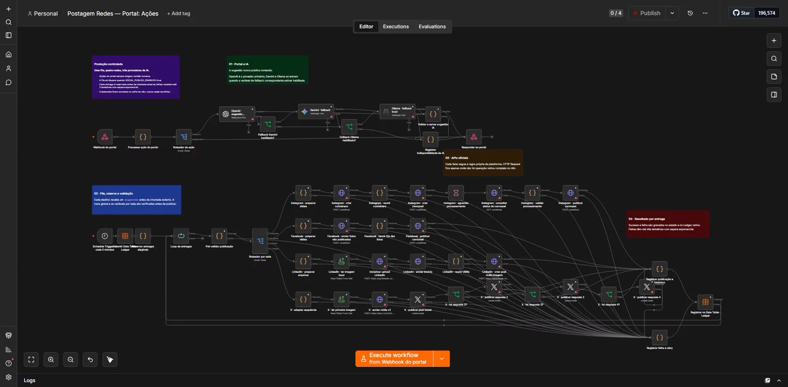
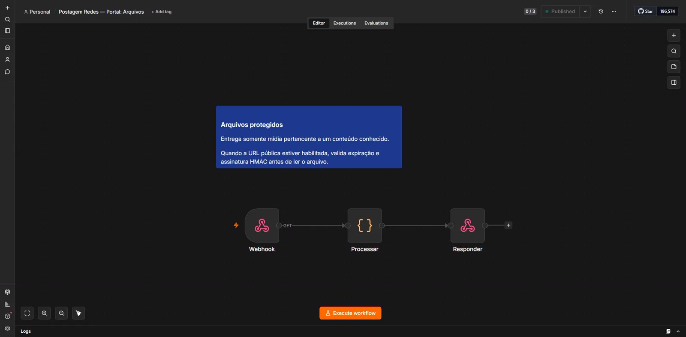

Problem
Content, files and approvals were spread across folders, spreadsheets and messages, with duplication risk and little visibility by channel.
AI AND SOCIAL NETWORK APIS
VALIDATED IN TESTINGn8n, Meta Graph API and human approval
I built a visual workspace to organize carousels, review captions, select channels and trigger three n8n workflows with independent results for each destination.

SCREENS AND WORKFLOWS




AI with supervision
OpenAI, Gemini and Ollama can assist with drafts, but the approved caption remains the main source.
Isolated failures
Results are recorded per channel so that one network does not automatically cancel the others.
Content, files and approvals were spread across folders, spreadsheets and messages, with duplication risk and little visibility by channel.
A visual portal, three workflows, API contracts, AI-assisted drafts, destination reservations, `dispatchId`, idempotency, retries and a delivery ledger.
An integration may work technically and still depend on stable hosting, permissions, quotas and provider policies for continuous operation.
What worked
Facebook and Instagram were exercised in testing. Other channels remain clearly identified as blocked or pending.
Next evolutions
Stable media hosting, independent channel adapters, OAuth renewal, confirmation webhooks and per-destination observability.
This case presents sanitized code, screens and documentation without credentials or internal company content.